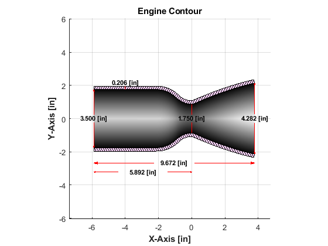

Contents
Script Details
Developer: Evan Olsen Last Updated: 11-14-2022 2:41PM Purpose: Calculate Geometry Specifications for Rao Nozzle Iteration: HalfCat Liquid Rocket Engine Team: RIT Liquid Propulsion
clc; clear; close all;
CONSTANTS
Material Properties -----------------------------------------------------
allowable_stress = 96.5*10^6; % [Pa] Allowable stress of aluminum FOS = 3.0; % [-] Factor of Safety % Engine Extensive Properties --------------------------------------------- D_chamber_imp = 3.5; % [in] Chamber Diamater - Extensive Property % CEAM Inputs ------------------------------------------------------------- AnalysisType = 2; % 1=InfiniteArea, 2=FiniteArea % acatRA (Ac/At) was determined from finding the most ideal value from a 3D relation % graph of Isp vs. AcAt vs. P_chamber acatRA = 4; % Combustion Chamber Area Ratio (Ac/At) % psiA was determined from the previously outlined relation and is the % maximum sustainable pressure we can handle in our first engine iteration. psiaA = 550.0; % [psia] Chamber Pressure in Absolute % ofRA was determined from the previously outlined relation and is the % most ideal O/F Ratio given the other two values. ofRA = 6.0; % Oxidizer/Fuel Ratio [wt%] ambP = 14.6959; % [psia] Pressure at Sea Level
Run Final CEAM
cd functions
[ispA,cstarA,aeatA,pressureA,gammaA] = CEAM(AnalysisType,acatRA,psiaA,ofRA,ambP);
Running NASA CEAM... Done!
Geometry Parameters Calculation
cd functions
[D_throat,R_throat,A_throat,D_chamber,A_chamber] = geometry_parameters(D_chamber_imp,aeatA(4),acatRA);
<strong>Geometry Parameters: </strong>D_chamber = 3.500 [in] D_throat = 1.750 [in] D_exit = 4.282 [in]
Performance Parameters Calculation
cd functions
performance_parameters(ispA(4),9.81,cstarA(3),pressureA(1)*100000,A_throat);
<strong>Performance Parameters: </strong>Generated Thrust = 2027.284 [lbf] m_flowrate = 3.6928 [kg/s]
Chamber and Characteristic Length Calculation
cd functions
[L_chamber] = length_calc(D_throat,A_chamber,A_throat);
<strong>Length Parameters: </strong>L_chamber = 5.89 [in] L_characteristic = 25.92 [in]
Wall Thickness Calculations
cd functions
[safe_wall_thickness] = wall_thickness(allowable_stress,pressureA(1)*100000,FOS,D_chamber);
<strong>Wall Thickness: </strong>safe_wall_thickness = 0.206 [in]
Run Python Script
IMPORTANT: Check README.txt
cd functions
[nozzle_contour] = runPython(gammaA(4),aeatA(4),R_throat*100);
Running Python script... Done!
Process Data
cd functions % Creates 'contour.csv' file in [cm] [nozzle_contour] = process_data(nozzle_contour);
Processing data...
Create Chamber
cd functions
[engine_contour,x_tangent] = create_chamber(nozzle_contour,L_chamber*100,D_chamber*100);
Plot Data in MATLAB
cd functions
plot_data(engine_contour(1:2,:)/2.54,safe_wall_thickness*39.3701,L_chamber*39.3701,x_tangent);
Done! 'contour.csv' generated at C:\Users\evans\OneDrive - rit.edu\RIT Courses\Launch Initiative\HalfCat\contour_calculation_dev